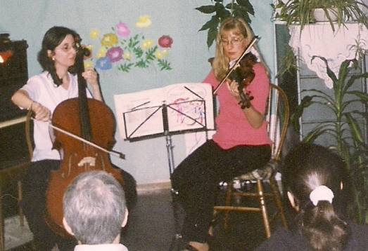
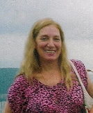
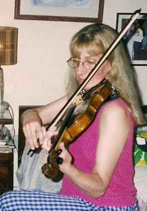
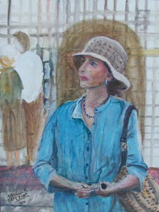
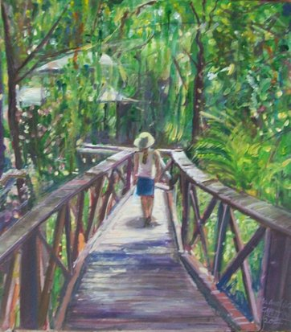
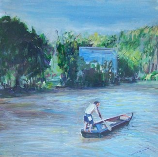

Volver a la página principal
Un sutil resplandor
 |
Entrevista con María Angélica Capettini (Córdoba, Capital- Argentina) |
Nota: Al final de esta página, se ha insertado un video grabado en vivo, de la concertista
Quien se allega a María Angélica, piensa en primera instancia, que se trata de una persona común, mujer simple de nuestro tiempo; abocada a sus quehaceres
de ama de casa cotidianos… Pero, cuando se puede apreciar sus expresiones artísticas, va descubriendo un mundo etéreo, similar a ésos que se describen como
lejanamente imaginarios, con horizontes donde las hadas ponen su toque grácil y colorido; inaccesibles para una mente que preferiría
deambular en los entornos materiales.
Dos vetas creativas, distingo en esta amiga singular: La música, a través del violín y, la pintura figurativa; donde la expresión de lo humano,
pinta una situación de vida palpable. No obstante, vislumbro que en múltiples manifestaciones del alma, le es posible viabilizar sus habilidades.
Le he preguntado cómo fue que surgieron estos intereses…
 |
-" Nací y crecí en un hogar donde se respiraba arte. Papá, violinista y luthier; mamá me enseñó a amar la música clásica; mi hermano, carpintero y luthier y mi hermana, artista plástica. Cuando cumplí diez años, papá me preguntó si quería estudiar violín y para entusiasmarme, me regaló uno de sus violines así como me impartió las primeras enseñanzas. Pero, durante la escuela secundaria, no tenía tiempo para dedicarle a su estudio. Recién a los 28 años pude retornar a este instrumento, tras haber completados mis estudios como Maestra Normal y Profesora en Psicopedagogía; profesión que he ejercido hasta hace poco en que me jubilé. |
| Aquel retorno al instrumento, me permitió profundizar su estudio con el Maestro Humberto Carfi - y su discípulo Norberto García-, cuya escuela dejó huellas profundas en mí, integrándome a la Camerata "Humberto Carfi". Ello propició que durante los años 2002 a 2004, fuera parte de la Orquesta Sinfónica de la Universidad Nacional de Córdoba, bajo la dirección de Federico Abiuso”. -“Me enseñaron que el músico debe apuntar a la EXCELENCIA: poseer técnica y sentido musical, para transmitir los sentimientos, y el espíritu de la obra.”- -“El violín es uno de los instrumentos más difíciles de ejecutar. Si bien empecé a estudiar a los 10 años, el aprendizaje requiere mucho tiempo, esmero, dinero… La vida exigía otros esfuerzos de subsistencia, por lo que no pude dedicarle todo cuanto deseaba. No obstante, en la actualidad continúo estudiando y me ha llenado de satisfacción al constatar que en los últimos recitales concretados junto al pianista Gerardo Casalino en "GALILEO" -resto bar y espacio cultural (de Córdoba, Capital)-, logré transmitir y despertar emociones en la gente. Disfruto intensamente lo que hago y deseo que la gente lo viva de la misma forma.”- |
 |
 |
-“Respecto a la otra inquietud que mencionas, en el año 1995 sentí repentinamente deseos de pintar. Pintar con pastel. Empecé a ir al taller de la profesora Magalí Gómez, quien me orientó con sabiduría a transitar este nuevo camino, y comencé pintando frutas con pastel y llegué a pintar con óleo. La vida me llevó hacia el maestro Ernesto Giannini, un grande, que me ayudó a expresar, a hacer una verdadera catarsis a través de la técnica suelta, libre, con pautas; pero desestructurada en su ejecución. Realmente, el trabajo que hice y continúo haciendo con la escuela de Giannini, es magnífico y lo siento profesional y terapéutico…”- |
-“Pero, no sabías que también disfruto escribir… Surgió desde la escuela primaria; mi materia favorita era Lenguaje, por lo que siempre leí mucho y lo sigo haciendo.
A los 12 años escribí mi primer poema y al enamorarme a los 15, escribí mucha poesía motivada por ese sentimiento profundo (fue un amor platónico,
como se dice comúnmente), pero dejó en mí la huella de lo que es el amor verdadero: intenso, insondable, del alma.
Escribí así, hasta fines de la adolescencia y el amor, siempre ha estado presente a lo largo de toda mi vida… Lo siento hacia el prójimo, las plantas, los animales,
la naturaleza toda.
El amor por los hijos, la maternidad es una vivencia muy significativa en la vida de la mujer. Los hijos son "tus hijos" siempre, aunque crezcan y levanten vuelo.
En la misma tesitura, las relaciones sociales me son muy importantes, tengo amigas (del alma) desde que tenía los 12 años. Necesito los vínculos con mi prójimo,
porque crecemos en sociedad. No obstante, también por etapas, necesito la soledad para estar conmigo misma y encontrarme”.
- “Como corolario, puedo describirme como muy sensible -debí fortalecerme para vivir mejor-, transparente, me gustan las personas sinceras y límpidas.”-
-- MÚSICA, TÚ Y YO SOMOS UNA SOLA. |
 |
 |
El Dia Que. from Marcos Battiston on Vimeo.
Volver a la página principal